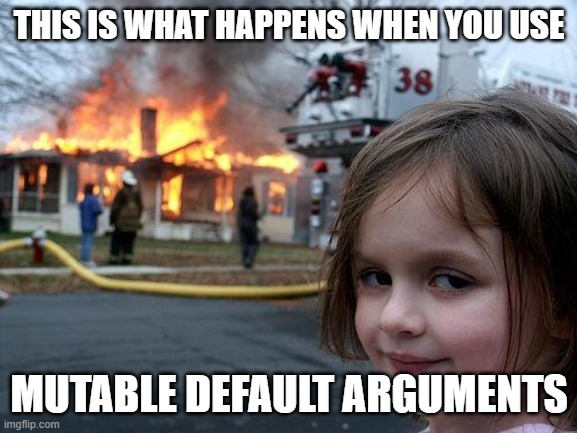
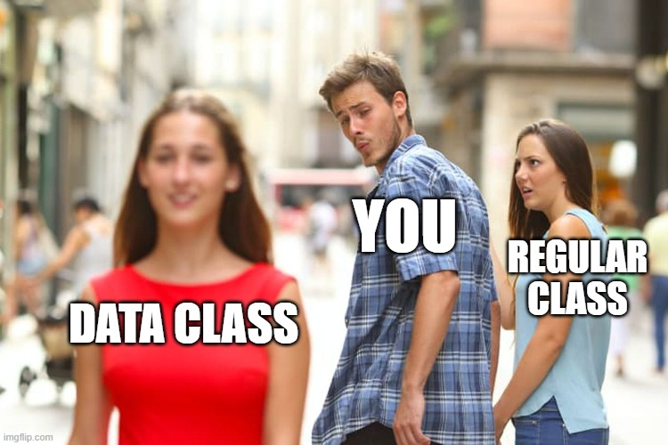

flowchart LR
A(Input A) --> F["Black box"]
B(Input B) --> F
F --> O(Output)
style F fill:#000,color:#fff,stroke:#333,stroke-width:4px
Functions, classes and modules
Functions as black boxes
- A function is a black box that takes some input and produces some output.
- The input and output can be anything, including other functions.
- As long as the input and output are the same, the function body can be modified.
flowchart LR
A(height: 1.0) --> F[is_operable]
B(period: 3.0) --> F
F --> O(True)
. . .
def is_operable(height, period):
return height < 2.0 and period < 6.0. . .
These two function behaves the same, but the implementation is different.
def is_operable(height, period):
model = load_fancy_ml_model()
return model.predict(height, period)Pure functions
A pure function returns the same output for the same input.
def f(x):
return x**2. . .
f(2)4. . .
f(2)4A non-pure function can return different outputs for the same input.
n = 0
def non_pure_function(x):
global n
n = n + 1
return x + n. . .
non_pure_function(2)3. . .
non_pure_function(2)4Side effects
A function can have side effects (besides returning a value)
def f_with_side_effect(x):
with open("output.txt", "a") as f:
f.write(str(x))
return x**2The function has x as input, returns the square of x, but also appends x to a file. If you run the function a second time, the file will contain two lines.
Side effects
Pure functions without side effects are easier to reason about.
But sometimes side effects are necessary.
- Writing to a file
- Writing to a database
- Printing to the screen
- Creating a plot
Modifying input arguments
def difficult_function(values):
for i in range(len(values)):
values[i] = min(0, values[i]) # üòü
return values. . .
x = [1,2,-1]
difficult_function(x)[0, 0, -1]. . .
x[0, 0, -1]This function modifies the input array, which might come as a surprise. The array is passed by reference, so the function can modify it.
Functions that doesn’t modify the input arguments are easier to use.
def easier_function(values):
l2 = list(values) # copyü§î
for i in range(len(l2)):
l2[i] = min(0, l2[i])
return l2. . .
x = [1, 2, -1]
easier_function(x)[0, 0, -1]. . .
x[1, 2, -1]. . .
Just be aware that copying large datasets can be slow.
Swapping out the internals of the black box…
def easier_function(values):
return [min(0, v) for v in values]. . .
x = [1, 2, -1]
easier_function(x)[0, 0, -1]x[1, 2, -1]Positional arguments
def f(x, y):
return x + y
f(1, 2)3Keyword arguments
def f(x, y):
return x + y
f(x=1, y=2)3Positional arguments
Version 1
def is_operable(height, period):
return height < 2.0 and period < 6.0
is_operable(1.0, 3.0)TrueVersion 2
def is_operable(period, height=0.0):
# dont forget, that arguments are swapped üëç
return height < 2.0 and period < 6.0
is_operable(1.0, 3.0)Falseüòü
The order of the arguments is swapped, since we want to make height an optional argument (more on that later). This breaks existing code, since the order of the arguments is changed.
Keyword-only arguments
def f(*, x, y):
return x + y
f(1,2)--------------------------------------------------------------------------- TypeError Traceback (most recent call last) Cell In[20], line 4 1 def f(*, x, y): 2 return x + y ----> 4 f(1,2) TypeError: f() takes 0 positional arguments but 2 were given
Optional(=default) arguments
def f(x, n=2):
return x**n
f(2)
f(2, n=3). . .
Makes it easy to use a function with many arguments.
Mutable default arguments
Python’s default arguments are evaluated once when the function is defined, not each time the function is called.
def add_to_cart(x, cart=[]): # this line is evaluated only once üòÆ
cart.append(x)
return cart. . .
my_cart = [2]
add_to_cart(1, cart=my_cart)[2, 1]. . .
add_to_cart(1)[1]. . .
add_to_cart(2)[1, 2]Python’s default arguments are evaluated once when the function is defined, not each time the function is called (unlike Ruby). This means that if you use a mutable default argument and mutate it, you will and have mutated that object for all future calls to the function as well.

How to use default (mutable) arguments
def add_to_cart_sane(x, cart=None):
if cart is None:
cart = [] # this line is evaluated each time the function is called
cart.append(x)
return cartadd_to_cart_sane(1)[1]add_to_cart_sane(2)[2]Changing return types
Since Python is a dynamic language, the type of the returned variable is allowed to vary.
def foo(x):
if x >=0:
return x
else:
return "x is negative". . .
General advice: Avoid multiple return types!
Changing return types - truthy
def is_operable(height, period):
if height < 10:
return height < 5.0 and period > 4.0
else:
return "No way!". . .
if is_operable(height=12.0, period=5.0):
print("Go ahead!")Go ahead!. . .
Important
Is this the result you expected?
. . .
A non-empty string or a non-zero value is considered “truthy” in Python!
Type hints
Python is a dynamically typed language, the type of a variable is determined at runtime.
. . .
But we can add type hints to help the reader (and the code editor).
def is_operable(height: float, period: float) -> bool:
...def clip(values:list[int], *, threshold:int = 0) -> list[int]:
return [min(threshold, v) for v in values]. . .
>>> x= [-1, 0, 2]
>>> clip(x)
[-1, 0, 0]
>>> x
[-1, 0, 2]
>>> clip(x, threshold=1)
[-1, 0, 1]Type hints are just hints, it will make it easier for you to read the code, and use it in your IDE, but it will not enforce the type.
Classes
class WeirdToolbox:
tools = [] # class variable ☹️
t1 = WeirdToolbox()
t1.tools.append("hammer")
t1.tools['hammer']. . .
t2 = WeirdToolbox()
t2.tools.append("screwdriver")
t2.tools['hammer', 'screwdriver']Class variables are rarely what you want, since they are shared between all instances of the class.
Classes
class Toolbox:
def __init__(self):
self.tools = [] # instance variable üòÉ
t1 = Toolbox()
t1.tools.append("hammer")
t1.tools['hammer']. . .
t2 = Toolbox()
t2.tools.append("screwdriver")
t2.tools['screwdriver']Instance variables are created when the instance is created, and are unique to each instance.
Static methods
from datetime import date
class Interval:
def __init__(self, start:date, end:date):
self.start = start
self.end = end
dr = Interval(date(2020, 1, 1), date(2020, 1, 31))
dr.startdatetime.date(2020, 1, 1)Here is an example of useful class, but it is a bit cumbersome to create an instance.
Static methods
from datetime import date
class Interval:
def __init__(self, start:date, end:date) -> None:
self.start = start
self.end = end
@staticmethod
def from_string(date_string: str) -> Interval:
start_str, end_str = date_string.split("|")
start = date.fromisoformat(start_str)
end = date.fromisoformat(end_str)
return Interval(start, end)
dr = Interval.from_string("2020-01-01|2020-01-31")
dr<__main__.Interval at 0x7f1958db7b60>Since we commonly use ISO formatted dates separated by a pipe, we can add a static method to create an instance from a string. This makes it easier to create an instance.
Dataclasses
from dataclasses import dataclass
@dataclass
class Interval:
start: date
end: date
@staticmethod
def from_string(date_string):
start_str, end_str = date_string.split("|")
start = date.fromisoformat(start_str)
end = date.fromisoformat(end_str)
return Interval(start, end)
dr = Interval.from_string("2020-01-01|2020-01-31")
drInterval(start=datetime.date(2020, 1, 1), end=datetime.date(2020, 1, 31))Dataclasses were introduced in Python 3.7, they are a convenient way to create classes with a few attributes. The variables are instance variables, and the class has a constructor that takes the same arguments as the variables.
@dataclass
class Interval:
start: date
end: date
def __str__(self) -> str:
return f"{self.start} | {self.end}"
dr = Interval(start=date(2020, 1, 1), end=date(2020, 1, 31))
dr # uses __repr__Interval(start=datetime.date(2020, 1, 1), end=datetime.date(2020, 1, 31)). . .
print(dr) # uses __str__2020-01-01 | 2020-01-31To override the default string representation, we can add a __str__ method.
Equality
On a regular class, equality is based on the memory address of the object.
class Interval:
def __init__(self, start:date, end:date) -> None:
self.start = start
self.end = end
dr1 = Interval(start=date(2020, 1, 1), end=date(2020, 1, 31))
dr2 = Interval(start=date(2020, 1, 1), end=date(2020, 1, 31))
dr1 == dr2FalseThis is not very useful, since we want to compare the values of the attributes.
Equality
class Interval:
def __init__(self, start:date, end:date):
self.start = start
self.end = end
def __eq__(self, other):
return self.start == other.start and self.end == other.end
dr1 = Interval(start=date(2020, 1, 1), end=date(2020, 1, 31))
dr2 = Interval(start=date(2020, 1, 1), end=date(2020, 1, 31))
dr1 == dr2TrueWe can override the __eq__ method to compare the values of the attributes.
For a dataclass, equality is based on the values of the fields.
from dataclasses import dataclass
@dataclass
class Interval:
start: date
end: date
dr1 = Interval(start=date(2020, 1, 1), end=date(2020, 1, 31))
dr2 = Interval(start=date(2020, 1, 1), end=date(2020, 1, 31))
dr1 == dr2TrueThis is the default behavior for dataclasses.
Data classes
from dataclasses import dataclass, field
@dataclass
class Quantity:
unit: str = field(compare=True)
standard_name: str = field(compare=True)
name: str = field(compare=False, default=None)t1 = Quantity(name="temp", unit="C", standard_name="air_temperature")
t2 = Quantity(name="temperature", unit="C", standard_name="air_temperature")
t1 == t2Trued1 = Quantity(unit="m", standard_name="depth")
d1 == t2FalseData classes
- Compact notation of fields with type hints
- Equality based on values of fields
- Useful string represenation by default
- It is still a regular class

Modules
Modules are files containing Python code (functions, classes, constants) that belong together.
$tree analytics/
analytics/
├── __init__.py
├── date.py
└── tools.py. . .
The analytics package contains two modules:
toolsmoduledatemodule
from analytics.tools import is_operable
from analytics.tools import Toolbox, Tool
from analytics.date import Interval
tool = Tool(name="hammer")
dr = Interval(start=date(2020, 1, 1), end=date(2020, 1, 31))
is_operable(height=1.8, period=1.0)Packages
- A package is a directory containing modules
- Each package in Python is a directory which usually contains a special file called
__init__.py - The
__init__.pycan be empty, and it indicates that the directory it contains is a Python package __init__.pycan also execute initialization code
__init__.py
Example: mikeio/pfs/__init__.py:
from ._pfsdocument import PfsDocument
from ._pfssection import PfsNonUniqueList, PfsSection
def read_pfs(filename:str, encoding:str="cp1252", unique_keywords:bool=False) -> PfsDocument:
"""Read a pfs file for further analysis/manipulation"""
return PfsDocument(filename, encoding=encoding, unique_keywords=unique_keywords). . .
The imports in __init__.py let’s you create aliases.
>>> mikeio.pfs._pfssection.PfsSection
<class 'mikeio.pfs._pfssection.PfsSection'>
>>> mikeio.pfs.PfsSection
<class 'mikeio.pfs._pfssection.PfsSection'>
>>> mikeio.PfsSection
<class 'mikeio.pfs._pfssection.PfsSection'>The PfsSection and PfsDocument are imported from the _pfssection and _pfsdocument modules. to the mikeio namespace.
Python naming conventions
By adhering to the naming conventions, your code will be easier to read for other Python developers.
- variables, functions and methods:
lowercase_with_underscores - classes:
CamelCase - constants:
UPPERCASE_WITH_UNDERSCORES
Variables, function and method names
- Use lowercase characters
- Separate words with underscores
. . .
model_name = "NorthSeaModel"
n_epochs = 100
def my_function():
passConstants
- Use all uppercase characters
GRAVITY = 9.81
AVOGADRO_CONSTANT = 6.02214076e23
SECONDS_IN_A_DAY = 86400
N_LEGS_PER_ANIMAL = {
"human": 2,
"dog": 4,
"spider": 8,
}. . .
Python will not prevent you from changing the value of a constant, but it is a convention to use all uppercase characters for constants.
Classes
- Use CamelCase for the name of the class
- Use lowercase characters for the name of the methods
- Separate words with underscores
. . .
Summary
- Functions as black boxes that take input and produces output.
- Positional vs keyword arguments arguments.
- Pure functions are easier to reason about.
- Avoid mutable default arguments and modifying input.
- Classes are useful for grouping related functions and data.
- Dataclasses can be very convenient.
- Module single Python file
- Package collection of modules